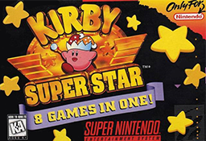

Thief (Xbox One) |
Top Gear (SNES) |
Game Boy Camera (GB) |
Battletoads (NES) |
Tetris Attack (SNES) |
Super Mario Land 2 (GB) |
No.50 Diddy Kong Racing (N64)
No.49 Kirby: Nightmare in Dreamland (GBA)
No.48 Kirby: Super Star (SNES)

No.47 Banjo-Kazooie (N64)
No.46 Mario Party 4 (GC)

No.45 Super Mario RPG: Legend of the Seven Stars (SNES)

No.44 Kingdom Hearts II (PS2)

No.43 Overcooked (Switch)

No.42 Megaman Battle Network 3 (GBA)

No.41 The Legend of Zelda: Links Awakening (Switch)

No.40 Resident Evil 4 (Switch)

No.39 The Legend of Zelda: Oracle of Seasons (GB)

No.38 Metroid: Fusion (GBA)

No.37 Donkey Kong Country (SNES)

No.36 Animal Crossing: New Horizons (Switch)

No.35 Wave Race 64 (N64)

No.34 Kirby Air Ride (GC)

No.33 Metroid: Zero Mission (GBA)

No.32 Pokémon FireRed Version (GBA)

No.31 Super Mario Galaxy (Wii)

No.30 Mario Party Superstars (Switch)

No.29 Mario Kart 8 Deluxe (Switch)

No.28 The Legend of Zelda: Twilight Princess (Wii)

No.27 Mario Kart: Double Dash (GC)

No.26 Mario Superstar Baseball (GC)

No.25 Mario Strikers Charged (Wii)

No.24 Pokèmon HeartGold Version (DS)

No.23 Mario and Luigi: Superstar Saga (GC/GB Player)

No.22 Dead by Daylight (Switch)

No.21 The Legend of Zelda: The Wind Waker (GC)

No.20 Paper Mario (N64)

No.19 Super Paper Mario (Wii)

No.18 Goemons Great Adventure (N64)

No.17 NCAA Football 14 (Xbox 360)

No.16 Rocket League (Switch)

No.15 Super Mario World (SNES)

No.14 Metroid Dread (Switch)

No.13 Mario Party 2 (N64)

No.12 Super Mario Odyssey (Switch)

No.11 Super Mario Sunshine (GC)

No.10 Star Fox 64 (N64)

No.9 Celeste (Switch)

No.8 Super Mario Bros. 3 (NES)

No.7 Undertale (Switch)

No.6 Super Smash Bros. Ultimate (Switch)

No.5 The Legend of Zelda: Ocarina of Time (N64/3DS)

No.4 The Legend of Zelda: Majoras Mask (N64)

No.3 Goof Troop (SNES)

No.2 The Legend of Zelda: Breath of the Wild (Switch)

No.1 Super Mario 64 (N64)